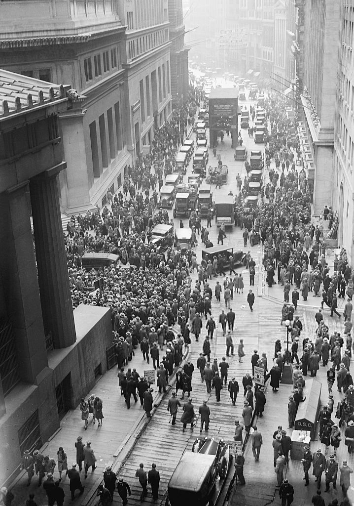

Total: 50 points. Part 1 is worth 15 points, Part 2 is worth 20 points, Part 3 is worth 15 points. Write answers on this test. For Part 3, answer in complete sentences and cite the sources by letter.
Match each term to its description. Each description is used once.
| ___ | 1. mass production | A. buying stock by paying only part of the price and borrowing the rest from a broker, with the stock pledged as security for the loan |
| ___ | 2. installment buying | B. the making of goods in very large quantities using standardized parts and machinery, so that each item costs less to produce |
| ___ | 3. radio network | C. an illegal bar or club that sold liquor during Prohibition, often hidden behind a locked door or a legitimate business |
| ___ | 4. suburb | D. the agreement signed in Paris in 1928 in which the signing nations renounced war as an instrument of national policy |
| ___ | 5. Teapot Dome | E. a residential area on the edge of a city, outside the center, where people live and travel into the city for work |
| ___ | 6. Kellogg-Briand Pact | F. October 29, 1929, the day of the heaviest selling in the stock market crash of 1929, when about 16.4 million shares were traded |
| ___ | 7. speakeasy | G. purchasing a good by paying part of the price at the time of purchase and the rest in regular payments over time, usually with interest or fees added |
| ___ | 8. National Origins Act | H. a Protestant movement that defended a literal reading of the Bible and opposed public school teaching that conflicted with it |
| ___ | 9. fundamentalism | I. an employer's policy of providing benefits such as pensions, paid vacations, and recreation in order to keep workers satisfied and to keep unions out |
| ___ | 10. Great Migration | J. a group of stations linked by wire that carry the same programs at the same time under one company |
| ___ | 11. Harlem Renaissance | K. production of more of a good than buyers will purchase at prices that cover the cost of producing it |
| ___ | 12. overproduction | L. the flowering of Black writing, music, and art in the 1920s, centered in Harlem in New York City |
| ___ | 13. welfare capitalism | M. the scandal in which Secretary of the Interior Albert B. Fall secretly leased federal naval oil reserves in Wyoming and California to private oil companies and accepted money from the oilmen in return; Fall was convicted and imprisoned |
| ___ | 14. buying on margin | N. the movement of hundreds of thousands of Black southerners to northern cities for jobs and greater rights during and after the war years |
| ___ | 15. Black Tuesday | O. the federal immigration law of 1924 that set each country quota at 2 percent of its people counted in the census of 1890 and barred nearly all immigration from Asia |
1. Building a chassis at Highland Park fell from about twelve and a half hours of labor in the fall of 1913 to about an hour and a half by the spring of 1914 chiefly because
A. the federal government set one price for every automobileB. the moving line carried each car past workers who each performed one task, and interchangeable parts needed no fittingC. Ford closed the Highland Park plant and moved production southD. steel replaced wood in the body of every Model T
2. A family that could not pay the full price of a radio or a refrigerator in 1925 could still bring one home because
A. chain stores lent goods to customers without chargeB. the federal government bought appliances for farm familiesC. installment buying let the buyer pay part of the price at once and the rest in regular payments, with interest or fees addedD. manufacturers had stopped charging for delivery
3. Network radio gave Americans a shared national culture chiefly because
A. linked stations carried the same programs at the same time, so listeners in many cities heard the same songs, jokes, scores, and news togetherB. Congress wrote one national program schedule for every stationC. every station broadcast from New York CityD. radio sets could receive only one station
4. Passenger car registrations rose from about 8 million in 1920 to about 23 million in 1929. One direct effect of that spread was
A. the end of installment buying for automobilesB. the return of courtship to the family parlorC. a decline in paved highway buildingD. the growth of suburbs built for drivers beyond the streetcar lines, and of daily commuting into the city
5. Teapot Dome became the largest scandal of the Harding years because Secretary of the Interior Albert B. Fall
A. sold the naval oil reserves at a public auction to the highest bidderB. secretly leased the reserves at Teapot Dome and Elk Hills without competitive bidding and accepted money from the oilmen who received the leasesC. refused to let any company drill for oil on federal landD. gave the reserves to the Navy for a training station
6. Under the Dawes Plan, money moved in a circle in which
A. Germany paid the United States, and the United States forgave the Allied debtsB. the Allies lent money to Germany, and Germany paid the United StatesC. American banks lent money to Germany, Germany paid reparations to the Allies, and the Allies paid their war debts to the United StatesD. the League of Nations collected the debts and divided them among its members
7. The Volstead Act defined intoxicating liquor as any beverage containing 0.5 percent or more alcohol by volume. That definition meant the law
A. banned beer and light wine along with whiskey and ginB. applied only to distilled liquor sold in saloonsC. allowed each state to set its own alcohol limitD. expired when the Eighteenth Amendment took effect
8. The National Origins Act of 1924 favored northern and western Europe chiefly through
A. a literacy test given at Ellis IslandB. a ban on Catholic and Jewish immigrants by nameC. fees that only wealthy immigrants could payD. its choice of the census of 1890 as the base year, before the large immigration from southern and eastern Europe
9. On the stand at Dayton in 1925, William Jennings Bryan weakened the literal reading he had come to defend when he conceded that
A. the Butler Act had been written by Clarence DarrowB. the days of creation in Genesis could be periods rather than twenty four hour daysC. John Scopes had never taught in TennesseeD. the Bible said nothing about the age of the earth
10. The Chicago Defender aided the Great Migration by
A. printing train schedules, job notices, and migrants' letters, and setting May 15, 1917 as a Great Northern DriveB. buying train tickets for every family that left the SouthC. chartering ships to carry migrants to ChicagoD. persuading northern factories to reserve jobs for its readers
11. Marcus Garvey and the UNIA built Black organizing into a mass movement chiefly by
A. filing lawsuits against segregated railroadsB. endorsing candidates of the Republican PartyC. organizing a mass membership with Black owned businesses, including the Black Star Line, and a center at Liberty Hall in New YorkD. publishing a daily newspaper in Chicago
12. The McNary-Haugen bills passed Congress in 1927 and 1928 and still gave farmers no price support because
A. the Supreme Court struck the bills down before they reached the presidentB. farm organizations withdrew their support at the last momentC. the Senate refused to vote on either billD. President Calvin Coolidge vetoed the bill both times
13. Union membership fell from about five million in 1920 to about three and a half million in 1929 in part because employers
A. were required by federal law to recognize every unionB. pressed the open shop under the American Plan and offered benefits through welfare capitalism and company unions in place of independent unionsC. raised wages so high that workers left their unionsD. closed every factory that employed union members
14. A Brookings Institution study estimated that in 1929 the richest five percent of Americans received about what share of the nation's personal income?
A. About thirty percentB. About five percentC. About ninety percentD. About one percent
15. The crash of October 1929 did not by itself create the Depression chiefly because
A. stock prices recovered fully by the end of 1929B. the federal government insured every bank deposit in 1929C. only a small minority of Americans owned stock, and the deeper collapse came through bank failures, broken credit, and falling demand in the years after 1929D. farmers held most of the nation's stock
16. Ford announced the five-dollar day in January 1914 as a business measure after a year in which the company had
A. lost its patent on the Model TB. been ordered by a court to double wagesC. sold fewer cars than any rival makerD. hired about 53,000 men to keep about 14,000 jobs filled, because workers quit the fast, repeated line work in large numbers
17. National advertising in the 1920s changed buying chiefly by
A. listing factory prices without describing the goodsB. presenting goods families had never owned as needs of a modern family, and selling status and a way of life along with the productC. persuading families to save the full price before buyingD. ending the use of brand names
18. Secretary Mellon argued that cutting the top income tax rate from 73 percent toward 25 percent would serve the Treasury because
A. wealthy men would move money out of tax exempt bonds and into productive investment whose profits could be taxedB. lower rates would end the need for a tariffC. the wealthy would pay the same tax in gold coinD. Congress had promised the cuts to the oil companies
19. Wheat averaged about $2.16 a bushel in 1919 and about $1.04 in 1929, while farm debts stayed at wartime levels. A farmer who planted more acres to cover his debts
A. raised the price of wheat for every farmerB. forced the government to buy his whole cropC. added to overproduction and pushed prices lower for every farmer, taken together with thousands of others doing the sameD. paid off his mortgage in a single season
20. Buying on margin made a falling market fall faster because
A. brokers were forbidden to sell stock in OctoberB. every buyer had paid the full price in cashC. the exchange closed for the winter of 1929D. when prices fell, brokers demanded more cash at once to protect their loans, and buyers who could not pay were sold out at once, forcing more shares onto the market
Source A. The Immigration Act of 1924 (the National Origins Act), Section 11(a)
Section 11(a): "The annual quota of any nationality shall be 2 per centum of the number of foreign-born individuals of such nationality resident in continental United States as determined by the United States census of 1890, but the minimum quota of any nationality shall be 100."
Immigration Act of 1924, Section 11(a), as printed in United States Statutes at Large, Volume 43, Part 1 (68th Congress, Chapter 190, 1924), page 159. The quoted sentence is complete; nothing within it has been cut. The act also barred nearly all immigration from Asia through its exclusion of aliens ineligible for citizenship, treated in Lesson 6.
A1. (2 points) State the quota rule in Source A in your own words. Cover the rate, the population the rate is applied to, and the minimum.
A2. (3 points) Under this law Germany received 51,227 places a year and Italy received 3,845. The law names no race, religion, or quality of any people. Explain how the rule in Source A still produced that ranking, and name the point in the process where the ranking was decided.
Source B. Crowd Outside the New York Stock Exchange, October 29, 1929

Photograph, October 29, 1929. A large crowd fills Broad Street outside the New York Stock Exchange in New York City, seen from above. United States government photograph, distributed on a Social Security Administration history poster and held by Wikimedia Commons; copied from the Lesson 8 assets. The photograph shows the street crowd on Black Tuesday. It does not show share prices, bank deposits, farm income, or employment.
B1. (2 points) Describe two things visible in Source B, and state the date and the event the crowd had gathered for.
B2. (3 points) A student claims Source B proves that the Great Depression began on October 29, 1929. Explain why the photograph alone is weak evidence for that claim. Use two facts from Lesson 8.
Source C. Marcus Garvey, Speech at Liberty Hall, New York
We hear among Negroes the cry of "Africa for the Africans". This cry has become a positive, determined one. ... We have established this Liberty Hall as the centre from which we send out the sparks of liberty to the four corners of the globe. ... If you want Liberty you yourselves must strike the blow. If you must be free you must become so through your own effort, through your own initiative. ... We have been camouflaged into believing that we were made free by Abraham Lincoln. That we were made free by Victoria of England, but up to now we are still slaves, we are industrial slaves, we are social slaves, we are political slaves, and the new Negro desires a freedom that has no boundary, no limit.
Marcus Garvey, speech to the delegates of the Universal Negro Improvement Association convention, Liberty Hall, New York, as printed in Philosophy and Opinions of Marcus Garvey, edited by Amy Jacques Garvey (1923). Cuts are marked with ellipses. The spelling centre is Garvey's, as printed.
C1. (2 points) According to Source C, what must Black people do to be free, and what has Garvey established in New York as the center of that work?
C2. (3 points) Garvey names three senses in which his listeners are still slaves. List the three, then explain how the closing claim of Source C states the position of the New Negro as Lesson 7 teaches it.
Part 1. 1-B (Blueprint 1), 2-G (Blueprint 2), 3-J (Blueprint 3), 4-E (Blueprint 4), 5-M (Blueprint 5), 6-D (Blueprint 6), 7-C (Blueprint 7), 8-O (Blueprint 8), 9-H (Blueprint 9), 10-N (Blueprint 10), 11-L (Blueprint 11), 12-K (Blueprint 12), 13-I (Blueprint 13), 14-A (Blueprint 14), 15-F (Blueprint 15).
Part 2. 1-B (Blueprint 1), 2-C (Blueprint 2), 3-A (Blueprint 3), 4-D (Blueprint 4), 5-B (Blueprint 5), 6-C (Blueprint 6), 7-A (Blueprint 7), 8-D (Blueprint 8), 9-B (Blueprint 9), 10-A (Blueprint 10), 11-C (Blueprint 11), 12-D (Blueprint 12), 13-B (Blueprint 13), 14-A (Blueprint 14), 15-C (Blueprint 15), 16-D (Blueprint 1), 17-B (Blueprint 2), 18-A (Blueprint 5), 19-C (Blueprint 12), 20-D (Blueprint 14).
Part 3.
A1. Two points. The annual quota for each nationality is 2 percent of the number of foreign born people of that nationality living in the continental United States as counted in the census of 1890 (1 point), and no nationality receives fewer than 100 places (1 point). (Blueprint 8)
A2. Three points. The ranking sits in the base year (1 point): the census of 1890 counted the population before the large immigration from southern and eastern Europe, so 2 percent of that count gave Germany, an old source country, 51,227 places (1 point), while Italy, whose people came in large numbers after 1890, received 3,845, about one Italian place for every thirteen German places (1 point). The decision was made when Congress chose the census year, before any individual applied or was judged. (Blueprint 8)
B1. Two points, one for the setting and one for the event, with any two accurate observations earning the setting point together. Observation: a crowd of hundreds fills the whole width of Broad Street below the Stock Exchange building, standing and looking toward the exchange, in business dress, photographed from above (1 point). Event: the photograph dates to October 29, 1929, Black Tuesday, the heaviest selling day of the crash, when about 16.4 million shares were traded and the crowd gathered outside the exchange as prices fell (1 point). (Blueprint 15)
B2. Three points. Any two lesson facts, one point each, plus the link, one point. Fact one: only a small minority of Americans owned stock, so a Wall Street crowd cannot stand for the whole economy. Fact two: the weak places predated the crash and lay elsewhere, in farm overproduction with wheat near $1.04 a bushel, in sick coal and textile industries, and in consumption carried on installment debt under concentrated income. Fact three: by mid November the market average stood near 199, about half its September peak of 381, and a market fall is a price event, not yet a decade of bank failure and unemployment. Link: the crash began the Depression in time, but the bridge from a broken market to a depression was built after 1929 by bank failures, broken credit, and falling demand, so a photograph of one street on one day cannot carry the claim alone. (Blueprint 15)
C1. Two points. Freedom must be won by Black people themselves: Garvey tells the delegates that if they want liberty they must strike the blow themselves, and become free through their own effort and their own initiative, not by waiting for another emancipator (1 point). He has established Liberty Hall in New York as the centre from which the movement sends out the sparks of liberty to the four corners of the globe (1 point). (Blueprint 11)
C2. Three points. The three senses: industrial slaves, social slaves, and political slaves (1 point). Explanation (2 points): the New Negro of Lesson 7 claimed dignity and equal rights, took pride in Black history and culture, and refused a second class place. Garvey states that position as a refusal of the older settlement: legal emancipation under Lincoln and Victoria left economic dependence, social standing, and political power untouched, so freedom with no boundary and no limit had to be built by organized Black action, which is the claim the UNIA, its businesses, and its Liberty Hall center were built to act on. (Blueprint 11)
Every answer above carries its blueprint tag at the end of its key entry. The table counts those tags: Part 1 has one item per entry, Part 2 questions 1 to 15 follow the entries in order with questions 16 to 20 adding a second multiple choice assessment to entries 1, 2, 5, 12, and 14, and Part 3 adds two assessments each to entries 8, 11, and 15. Every entry is assessed at least twice.
| Entry | Blueprint entry | Part 1 | Part 2 | Part 3 | Total |
|---|---|---|---|---|---|
| 1 | Mass production: Ford, the assembly line, and the falling price of the automobile | 1 | 2 | 0 | 3 |
| 2 | Consumer culture: advertising, installment credit, chain stores, and the taught desire to buy | 1 | 2 | 0 | 3 |
| 3 | Mass media and celebrity: network radio, the movies, the tabloids, sports, and the Lindbergh flight | 1 | 1 | 0 | 2 |
| 4 | The automobile remakes daily life: suburbs, roads, tourism, courtship, and the costs | 1 | 1 | 0 | 2 |
| 5 | Republican government at home: Harding, Coolidge, Teapot Dome, tax cuts, and the pro-business state | 1 | 2 | 0 | 3 |
| 6 | Foreign policy of the decade: war debts, disarmament, the Kellogg-Briand Pact, and independence from the League | 1 | 1 | 0 | 2 |
| 7 | Prohibition: the Volstead Act, enforcement, speakeasies, and organized crime | 1 | 1 | 0 | 2 |
| 8 | Immigration restriction: the Emergency Quota Act, the National Origins Act, and eugenics | 1 | 1 | 2 | 4 |
| 9 | The culture wars: the revived Klan, Scopes, fundamentalism, and Sacco and Vanzetti | 1 | 1 | 0 | 2 |
| 10 | The Great Migration: causes, the Defender, and Black life in northern cities | 1 | 1 | 0 | 2 |
| 11 | The Harlem Renaissance, the New Negro, Garvey and the UNIA, and Black organizing | 1 | 1 | 2 | 4 |
| 12 | The farm problem: overproduction, falling prices, and McNary-Haugen | 1 | 2 | 0 | 3 |
| 13 | Labor in decline: the open shop, welfare capitalism, and company unions | 1 | 1 | 0 | 2 |
| 14 | Unequal prosperity and speculation: income concentration, installment debt, margin buying, and the bull market | 1 | 2 | 0 | 3 |
| 15 | The crash of October 1929: what broke, what it did not yet mean, and the bridge to the Depression | 1 | 1 | 2 | 4 |